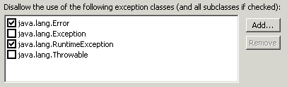
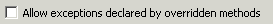
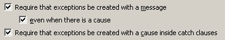
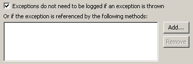
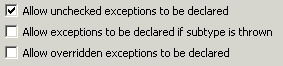

Audit - Rules - Exception UsageDescriptionThis group contains audit rules that check for problems related to the use of exceptions within the code.  |
| Rules: |
Summary
Some exceptions should not be caught.
Description
This audit rule finds catch clauses that catch an exception class that is disallowed. The list initially includes exception classes that are either too general (such as Throwable or Exception), or that are unchecked (such as Error and RuntimeException).
Example
The following catch clause would be flagged because it catches instances of the class java.lang.Throwable, which is too general:
try {
...
} catch (Throwable exception) {
...
}
Summary
Some exceptions should not be declared for methods or constructors.
Description
This audit rule finds methods and constructors that declare as a thrown exception an exception class that is disallowed. The list initially includes exception classes that are either too general (such as Throwable or Exception), or that are unchecked (Error, RuntimeException, and all subclasses of either).
Example
If the rule is configured to disallow the declaration of unchecked exceptions, then the following method would be flagged as a violation:
public void initialize()
throws Error
{
...
}

Summary
Exceptions should be created with as much information as possible.
Description
When exceptions are created they should be given as much information as possible, including a message and, when one is available, the exception that caused the exception being created.
Example
The following exception creation would be flagged as a violation because it does not specify a message:
throw new CriticalApplicationException();

Summary
Exceptions should be declared to inherit from Exception, but not from either RuntimeException or RemoteException.
Description
Exceptions should be declared to inherit from Exception, but not from either RuntimeException or RemoteException.
Example
The following class declaration would be flagged as an error because it extends RuntimeException:
public class MyException extends RuntimeException
{
}
Summary
Exceptions that are caught should be logged.
Description
This audit rule checks for caught exceptions that are not logged.
Example
The following catch clause would be flagged as a violation because the exception is not logged:
try {
...
} catch (Exception exception) {
// Exceptions should never be ignored like this
}

Summary
Some exceptions should be rethrown.
Description
This audit rule finds catch clauses that do not rethrow the original exception. The list initially includes Error and ThreadDeath. For example, if ThreadDeath is not rethrown, then the thread will not terminate.
Example
If the rule has been configured to require that instances of the class java.lang.ThreadDeath must be rethrown, the following catch clause would be flagged as a violation:
try {
...
} catch (ThreadDeath exception) {
resource.release();
}
Summary
Some exceptions should not be thrown.
Description
This audit rule finds throw statements that throw an exception class that is disallowed. The list initially includes exception classes that are either too general (such as Throwable or Exception), or that are unchecked (Error, RuntimeException, and all subclasses of either).
Example
If the rule is configured to disallow throwing of instances of Throwable, then the following throw statement would be flagged as a violation:
throw new Throwable("Bet this won't get caught");
Summary
Unnecessary exceptions should be removed.
Description
This audit rule checks for methods that declare an exception that cannot be thrown within the body of the method.
There are two options. The first controls whether unchecked exceptions will be allowed to be declared. This is sometimes desirable to allow the full range of exceptions to be fully documented.
The second option controls whether a class of exception can be declared when a subclass of the exception class is thrown, or whether only the classes of exceptions that are actually thrown can be declared.
Note: this rule does not examine the implementations of a method that occur in subclasses to see whether an exception is being declared in a superclass in order to allow it to be thrown by a method in a subclass.
Example
The following throws clause would be flagged as a violation because there is no way for the exception to be thrown:
public int getChildCount()
throws RemoteException
{
return 0;
}

Summary
Do not use instanceof to determine an exception's type in a catch block. Such check could miss some unexpected exception.
Description
This audit rule looks for catch blocks where the instanceof operator is used to check the exception's type. Subclasses of the caught exception can be handled separately by including a separate catch block for them before the superclass' catch block.
Security Implications
An uncaught exception can be handled by default exception handling mechanisms, which usually results in an exposure of a stack trace. This provides an attacker with an information on the technology stack of a system which could later be used to implement an attack.
Example
The following code will be flagged as a violation because the instanceof operator is used to check an exception's type:
} catch (IOException e) {
if (e instanceof EOFException) {
...
}
...
}